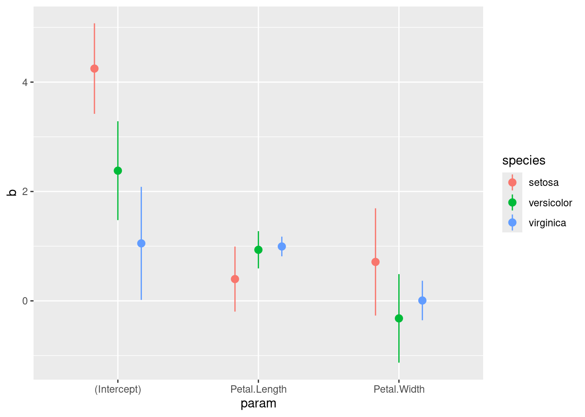
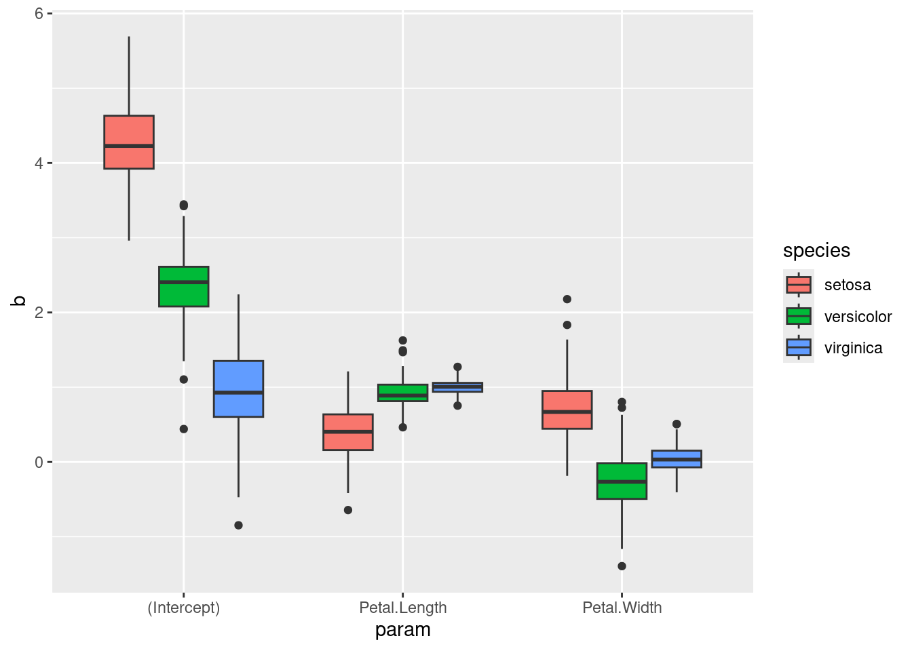

library(ggplot2)
library(tidyr)
library(dplyr)
library(purrr)
dat <- iris
# functions
remove_rownames <- function(x){
rownames(x) <- NULL
x
}
sum_lm <- function(x, conf.level = 0.95){
xs <- data.frame(summary(x)$coefficients)
xs$param <- rownames(xs)
rownames(xs) <- NULL
names(xs) <- c("b", "se", "t", "pval", "param")
cc <- data.frame(confint(x, level = conf.level))
names(cc) <- c("ci.lb", "ci.ub")
rownames(cc) <- NULL
cbind(
xs[, c("param", "b", "se", "t", "pval")],
cc
)
}
# fit a linear model for each Species
datl <- split(dat, dat$Species)
fitl <- lapply(datl, function(d) lm(Sepal.Length ~ Petal.Width + Petal.Length, data = d))
resl <- lapply(fitl, sum_lm)
res_by_species <- do.call(rbind, resl)
res_by_species <- remove_rownames(res_by_species)
res_by_species$species <- rep(names(resl), sapply(resl, nrow))
ggplot(res_by_species, aes(x = param,
y = b,
ymin = ci.lb,
ymax = ci.ub,
color = species)) +
geom_pointrange(position = position_dodge(width = 0.5))
# alternative version using other packages
resl <- lapply(fitl, broom::tidy, conf.int = TRUE)
res_by_species <- dplyr::bind_rows(resl, .id = "species")
res_by_species# A tibble: 9 × 8
species term estimate std.error statistic p.value conf.low conf.high
<chr> <chr> <dbl> <dbl> <dbl> <dbl> <dbl> <dbl>
1 setosa (Intercep… 4.25 0.411 10.3 1.13e-13 3.42 5.08
2 setosa Petal.Wid… 0.712 0.487 1.46 1.51e- 1 -0.268 1.69
3 setosa Petal.Len… 0.399 0.296 1.35 1.84e- 1 -0.196 0.994
4 versicolor (Intercep… 2.38 0.449 5.30 3.04e- 6 1.48 3.28
5 versicolor Petal.Wid… -0.320 0.402 -0.795 4.30e- 1 -1.13 0.489
6 versicolor Petal.Len… 0.934 0.169 5.52 1.44e- 6 0.594 1.27
7 virginica (Intercep… 1.05 0.514 2.05 4.63e- 2 0.0179 2.09
8 virginica Petal.Wid… 0.00706 0.179 0.0394 9.69e- 1 -0.354 0.368
9 virginica Petal.Len… 0.995 0.0893 11.1 8.87e-15 0.815 1.17 # bootstrapping
boot <- function(data, B = 100){
res <- vector(mode = "list", length = B)
n <- nrow(data)
for(i in 1:B){
idx <- sample(x = 1:n, size = n, replace = TRUE)
dataB <- data[idx, ]
rownames(dataB) <- NULL
res[[i]] <- dataB
}
return(res)
}
fit_lm <- function(data){
lm(Sepal.Length ~ Petal.Width + Petal.Length, data = data)
}
bootl <- lapply(datl, boot, B = 100)
fit_bootl <- lapply(bootl, function(x) lapply(x, fit_lm))
res_bootl <- lapply(fit_bootl, function(x) lapply(x, sum_lm))
res_bootl <- lapply(res_bootl, function(x) do.call(rbind, x))
res_boot_by_species <- do.call(rbind, res_bootl)
res_boot_by_species <- remove_rownames(res_boot_by_species)
res_boot_by_species$species <- rep(names(res_bootl), sapply(res_bootl, nrow))
ggplot(res_boot_by_species, aes(x = param, y = b, fill = species)) +
geom_boxplot()
# using nested tibbles
dat |>
group_by(Species) |>
nest() |>
mutate(boot = map(data, boot)) |>
select(-data) |>
unnest(boot) |>
mutate(fit = map(boot, fit_lm)) |>
mutate(res = map(fit, sum_lm)) |>
select(-boot, -fit) |>
unnest(res)# A tibble: 900 × 8
# Groups: Species [3]
Species param b se t pval ci.lb ci.ub
<fct> <chr> <dbl> <dbl> <dbl> <dbl> <dbl> <dbl>
1 setosa (Intercept) 4.27 0.369 11.6 2.20e-15 3.53 5.01
2 setosa Petal.Width 1.57 0.596 2.64 1.12e- 2 0.376 2.77
3 setosa Petal.Length 0.280 0.265 1.06 2.96e- 1 -0.253 0.813
4 setosa (Intercept) 3.62 0.460 7.87 4.02e-10 2.70 4.55
5 setosa Petal.Width 0.457 0.575 0.796 4.30e- 1 -0.699 1.61
6 setosa Petal.Length 0.847 0.353 2.40 2.05e- 2 0.136 1.56
7 setosa (Intercept) 4.17 0.473 8.81 1.62e-11 3.22 5.12
8 setosa Petal.Width 0.297 0.469 0.632 5.30e- 1 -0.648 1.24
9 setosa Petal.Length 0.591 0.348 1.70 9.63e- 2 -0.110 1.29
10 setosa (Intercept) 4.22 0.431 9.78 6.55e-13 3.35 5.08
# ℹ 890 more rows